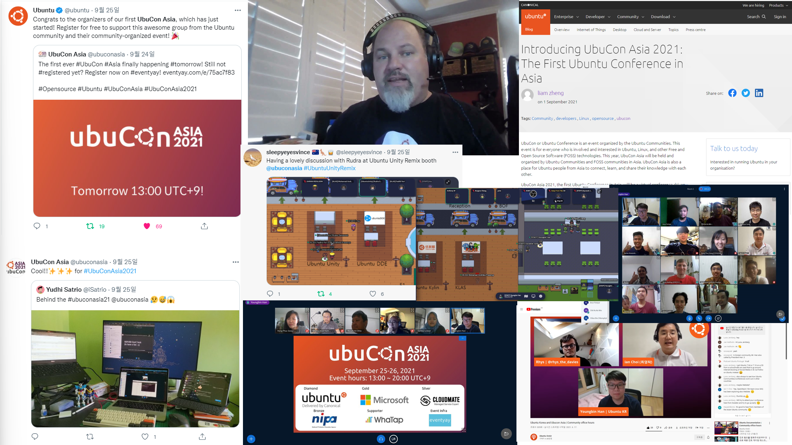
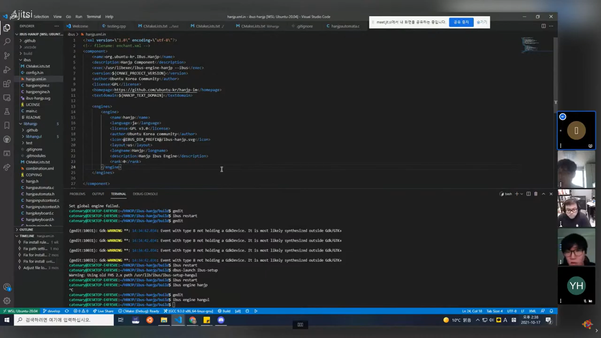

안녕하세요, 원래는 연말이 되면 송년회 행사를 하면서 한 해를 돌아보거나, 작년 같은 경우는 온라인으로 연말 행사를 진행 했었는데요. 올해는 따로 연말 행사를 하기엔 시간적 여유가 부족해서, 간단히 글로 대신 돌아 보고, 내년 초 신년회 행사때 2021년에 한 활동을 다시 한번 돌아보는 시간을 가져 보고자 합니다.
우분투한국커뮤니티에서는 올 한 해도 다양한 활동을 진행 힜습니다. 올해 처음 열린 우부콘 아시아 2021 (UbuCon Asia 2021) 부터, 오픈소스 컨트리뷰션 아카데미 등 다양한 활동을 했는데요, 각각 어떤 활동이였는지 간단히 알아보겠습니다.
우부콘 아시아 2021 (UbuCon Asia 2021)
올 해 처음 열린 우부콘 아시아 2021 행사는 아시아 지역의 우분투 커뮤니티와 우분투와 연관된 다양한 오픈소스 커뮤니티가 협업하여 함께 개최한 온라인 컨퍼런스 행사입니다. 우분투 한국 커뮤니티 주도로, 아시아 10개 국가 12개 커뮤니티가 모여 1년 가까이 되는 기간동안 준비하여 9월 25일부터 26일 까지 이틀동안 진행 하였습니다. 글로벌 행사 준비를 처음 하는 것이기도 하고, 온라인으로 모여서 다양한 곳에 사는 사람들로 이뤄진 팀으로 준비 하다 보니, 오프라인 행사를 준비 할 때와는 또 다른 다양한 어려움이 있었습니다. 그럼에도 이미 온라인/오프라인 글로벌 행사나 대형 행사를 준비한 경험이 있는 해외 커뮤니티 분들이나, 우분투 한국 커뮤니티와 자주 교류하는 오픈스택 한국 커뮤니티 등 주변 커뮤니티에서 행사 준비에 대한 경험, 조언, 의견 등을 공유해 주신 덕에 잘 마칠 수 있었습니다.
또, Canonical, Microsoft, Cloudmate, NIPA, WhaTap Labs, Eventyay 등 다양한 회사나 기관에서 후원해 준 덕에 행사 준비에 필요한 비용을 잘 조달할 수 있었습니다.

Canonical, Ubuntu Desktop Team 의 Engineering Manager 이신 Ken VanDine 님의 키노트와 Ubuntu 프로젝트를 이끄시는 Mark Shuttleworh 님의 환영 인사를 시작으로, 첫 우부콘 아시아에 연사로 참여해 주신 36분의 발표자 분들 덕에 다양한 주제로 행사 일정을 구성해서 아시아 지역 우분투 커뮤니티의 다양한 이야기를 전해 들을 수 있었습니다. 일반 발표 세션 뿐만 아니라, 패널 토론, 워크샵, 라이트닝 토크 등 다양한 형태의 프로그램이 진행 되었으며, Gather Town 을 통한 네트워킹과 후원사 부스 운영도 진행 되었습니다.
이틀동안 온라인으로 진행한 우부콘 아시아 2021은 384분이 참가 등록 해 주셨으며, 그 중 약 150~160분이 참석, 각 세션별로 보통 20~50분이 참여해 주셨습니다. 온라인 행사는 오프라인 행사에 비해 준비는 비교적 쉬운 편이지만, 참석하고 중간에 떠나는 것도 더 쉽다 보니, 등록은 했어도 실제 참석하시는 분의 숫자가 오프라인 행사에 비해 현저히 적었습니다. 무료로 하는 오프라인 행사가 보통 등록자중 절반 정도가 참여한다면, 온라인은 세션별로 약 10분의 1정도만 참석했습니다.
UbuntuOnAir 패널 참여
작년 가을에 우분투 커뮤니티 의회 전체가 사라졌다가, 몇달 후 새로 구성원을 선출하여 다시 선출했던 일이 있었는데요, 이 때 새로 다시 만들어진 Canonical 의 Ubuntu Community Team 측에서 행사 준비를 적극적으로 도와주었고, 기회를 또 얻어서 UbuntuOnAir 에 오픈스택 한국 커뮤니티의 최영락님과 함께 패널로 참여하여 우분투 한국 커뮤니티의 활동과, 우부콘 아시아에 대해 이야기 하는 시간을 가지기도 하였습니다.
오픈소스 컨트리뷰션 아카데미
정보통신산업진흥원에서 진행하는 “오픈소스 컨트리뷰션 아카데미"는 이미 다양한 오픈소스 프로젝트에 지속적으로 기여하고 있는 선배 기여자 또는 메인테이너 분들이, 오픈소스에 처음 입문 하고자 하는 후배 기여자 분들이 오픈소스 참여를 잘 시작할 수 있도록 멘토링을 제공하는 프로그램 입니다. 작년에는 “오픈소스 컨트리뷰톤” 이라는 이름으로 진행 하다가, 올해는 활동 기간이 더 길어지고, “오픈소스 컨트리뷰션 아카데미"라는 이름으로 바뀌었습니다.
우리 커뮤니티 에서는 작년에 “우분투 한국어 번역"으로 우분투의 UI를 번역하는 프로젝트로 참여했다면, 올해는 우리 커뮤니티의 자체 프로젝트이기도 한 “Hanjp Input Method” 프로젝트로 8월에서 11월 까지 활동에 참여하였습니다. Hanjp 프로젝트의 경우 오랜 기간동안 동일한 소수의 기여자 분들만이 참여해 오셔서, 이번 활동으로 새로운 기여자 분들의 유입을 위해 초반에는 새로운 기능 구현보다, 멘티분들이 CMake, Gettext, GLib/GObject, iBus API, Linux IME 동작 구조, 리눅스 데스크톱 환경 익숙해지기 등 Hanjp 개발에 사용되는 기술과 이론에 익숙해 질 수 있도록 하는 것을 도왔습니다.

멘티 분들이 어느정도 개발 환경에 익숙해진 후에는, 본격적으로 새 기능을 구현하거나, 코드를 리펙터링 하거나, 빌드 도구 및 환경 개선, 패키징 작업과, 리눅스 이외 타 플랫폼 지원 작업 등을 진행하였습니다. 부족한 문서화 부분도 개선하였고, RustPython팀의 멘토로 참여 중이시고 MacOS 한글 입력기인 구름 입력기의 메인테이너이신 정윤원 님과도 협업하여, Hanjp 의 MacOS 지원을 위한 협업도 진행할 수 있었습니다. 원래는 CI 구성이 없어, PR을 검토할 때 직접 코드를 한줄씩 검토해야 했는데, 이번 활동으로 GoogleTest 기반 테스트 코드와 테스트 자동화를 위한 CI 도 구축이 되어, PR 검토시 부담을 어느정도 줄일 수 있게 되었습니다.
이번 컨트리뷰션 아카데미를 통해, 총 20건의 PR을 받았으며(그 중 19건 병합), 5건의 이슈가 있었고(4건에 멘티분들이 참여), 1건의 새 버전 릴리즈, 외부 프로젝트이자 Hanjp 와 연관성이 깊은 libhangul 프로젝트에서 2건의 이슈에 참여하였습니다. 또한 활동 기간 이후에도 지속적으로 참여해 주시는 기여자가 2~3분 생겼으며, 새로운 메인테이너도 생겼습니다.
웹사이트 개편과 새 운영진 합류
올해는 우부콘 아시아와 컨트리뷰션 아카데미 이외에는 사람이 부족하기도 했고, 운영진 분들이 본업으로 바쁘기도 해서, 그룹 스터디나 세미나 같은 기존에 해 오던 활동을 많이 하지 못했습니다. 그래서 운영진 분들 맡은 일을 조금이라도 분산하고자 새 운영진을 모집했고, 한상곤님, 김광연님, 조채연님이 운영진으로 새로 합류 하셨습니다.
또한 홈페이지와 블로그를 Hugo 및 Vanilla Framework 기반으로 새로 개편하여, 우분투 및 커뮤니티 관련 필요한 정보를 더 쉽게 찾을 수 있도록 바꿨습니다.
법인으로 보는 단체 등록 준비
11월 초 우부콘 아시아 2021 행사 종료 및 정산 후 남은 금액을 우리 커뮤니티에서 받기로 하면서, 커뮤니티 자금이 기존에 비해 크게 늘어나게 되었습니다. 이에 따라 기존에 개인 계좌로는 회계 관리가 어려운 수준이 되어, 법인으로 보는 단체**(“임의 단체” 라고도 많이 부릅니다)** 등록을 준비해 왔습니다. 등록을 통해 발급되는 고유번호증으로 단체 명의로 된 은행 계좌를 열어 관리하고자, 11월 부터 추진중에 있는데요.
정관이나 창립 회의록, 회원 명부 같은 서류 문제 보다는, 주소지 문제나 발기인으로 참여할 분들 직장에서 겸업/겸직 금지 여부 확인 등에서 시간이 많이 지연된 상태입니다. 다행이도 몇일 전에 문제가 되던 부분이 모두 해결이 되어, 오늘 신청서를 작성하여 제출 한 상태 입니다. 이제 승인여부를 기다리는 일이 남은 것 같네요.
2022년에는?
2022년에는 Ubuntu 22.04 LTS Jammy Jellyfish 가 출시되는 해 입니다. 또 이와 관련하여 다양한 활동을 할 예정인데요, 자세한 사항은 내년 초 온라인으로 진행할 신년회 행사에서 이야기 해 보고자 합니다. 이제 운영진도 조금 늘었으니, 올해 보다 좀 더 다양한 활동을 해 볼 예정입니다.
지금 이 글을 보시는 여러분들도, 올 한해 잘 마무리 하시고, 2022년 새해 잘 맞이 하시기 바랍니다. 내년 우분투 한국 커뮤니티 활동에도 많이 참여해 주시기 바랍니다.

우분투한국커뮤니티 블로그
© 2021 우분투 한국 커뮤니티 (우분투 한국 로컬 커뮤니티 팀). 별도 고지가 있는 경우를 제외하고, 웹 사이트 소스코드는 MIT, 웹 사이트의 컨텐츠는 CC BY-SA 4.0 라이선스로 이용 가능합니다. Ubuntu 및 Canonical 은 Canonical Ltd. 의 등록 상표입니다.
GitHub에서 소스코드 보기